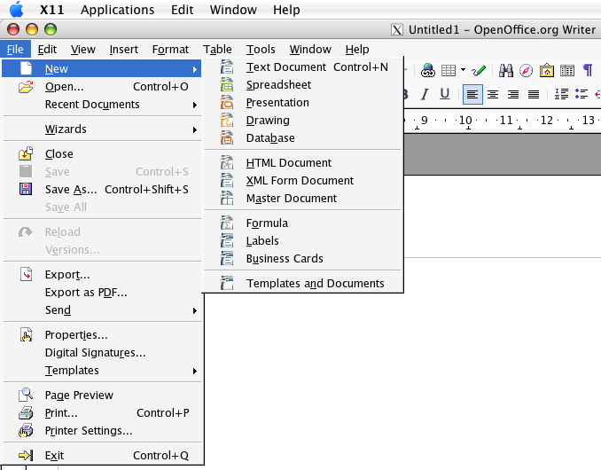

Mac Port FAQ
Where Is Calc, Draw, Impress andBase?
Why can I only access the word processor/Writer?
To access the OpenOffice.org components other than Writer:
- Start OpenOffice.org (a Writer/Text Document will open)
- Go to the "File" menu of the "OpenOffice.org Writer" window and select the appropriate OpenOffice.org component.
Please see the screenshot below:
